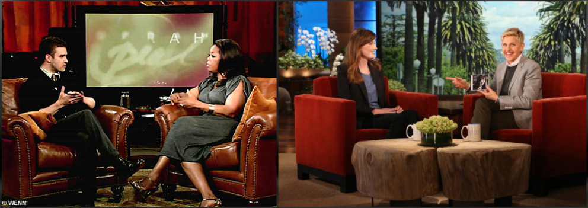
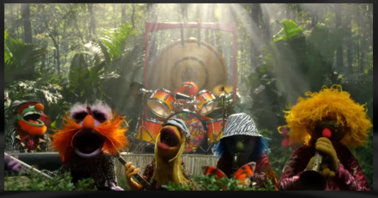
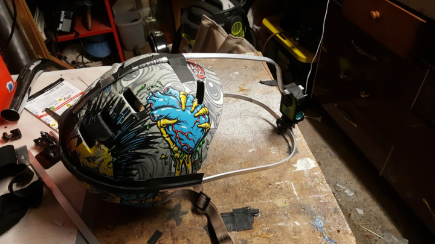
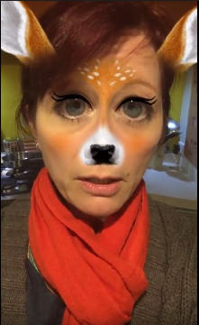
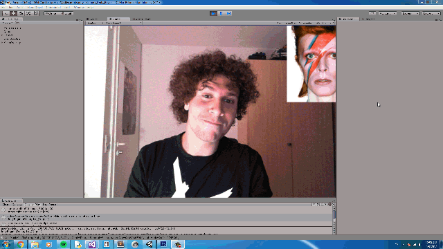
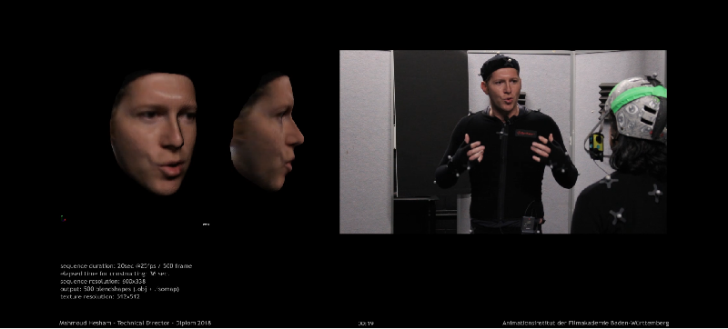

Trash Praxis
Motivation
The initial motivation for this project was to investigate rapid content creation for virtual reality head mounted displays (VR HMD) using a game engine and motion capture technology.
Concept
The concept was to create VR content that could be distributed either as a high quality ‘room scale’ VR experience using desktop playback or as a 360 video distributed via YouTube for google cardboard/GearVR type display.
For the proof of concept a very simple framework was used: something like a 2 person podcast or talkshow with computer generated visuals. The talk show topic material would be casual discussion of media and culture between hosts Alfio Leotta and Raqi Syed, both academics in the area of Media studies at Victoria University of Wellington. The project was undertaken as part of the VUW ‘Digital Futures’ research initiative. The initial phase of this project was completed over the last quarter of 2016 and into the first quarter of 2017.
Styling
This talk show format has an existing visual trope, the sofa and potted plants, table with coffee cups

With this we would replace the humans with digital character creations, taking clues from the Muppets, particularly embracing design elements to support secondary motion- things like hair, feathers:

Concepts were drafted, and characters built/dressed. We chose to minimize digital asset creation effort by using free non-commercial assets or purchasing pre-made assets, then augmenting as needed. The character puppets are from the Autodesk character builder.


Methodology
The methodology would employ motion capture ‘Virtual Production’ techniques to capture the performance as completely as possible, then deliver the results with Unreal Engine 4.
Game Engine
Unreal Engine 4 is a game engine from Epic Games well suited toward linear cinematic VR content creation. It has many features to deliver a rich visual quality
‘Virtual Production’
is a film making technique refined through the productions like the film ‘Avatar’ and ‘War for the Planet of the Apes’ whereby live action performances are captured using various technologies to be reconstructed into digital images of that performance.
This video shows some good examples and describes the technique.
Capture
The motion capture was done using the 8 camera Optitrack system installed at VUW School of Design.
With the help of a team of engaged students we collected an array of data from our performers including multichannel audio, reference video, motion capture data, and facial performance video. With this data, we can reconstruct the event with computer graphics characters and present the result via Unreal Engine 4 in multiple formats allowing us to gage the result against the production effort for each format.
Here is an example from one of the motion capture sessions, captured with the Gear360 camera
Post-production
The Post-production for this type of content is not particularly rapid and comes with technical challenges. Our aims have two formats for content delivery. One is 360 degree video. The other is geometry and animation delivered by game engine. The former is derived from the latter. Both have their drawbacks and merits, both qualitatively and in terms of production issues. This project proposed to deliver in both formats to provide empirical data on viable production methods for VR content.
Here is a very early sample of putting the data onto characters in Unreal Engine 4
Faces
Clearly the lifeless faces are going to be limiting to viewer engagement. In this next test, the characters were covered with fur and put into a woodland scene.
Slightly more watchable, however it’s clear faces will be critical to the success of the piece.
Faces were a consideration from the start. For phase 1 on of the project, I assembled a single helmet mounted camera from a bike helmet and goPro clone.

We used this on Raqi. For Alfio,we recorded a ‘witness camera’, locked off and tight on the head. We got reasonable data from these.
However, we did not firmly establish exactly how we could carry the facial performance in the game engine. I spent some time looking into options including open source options for markerless facial tracking and how to use this data to manipulate a cg face.
I also trialled a commercial option. These options all required a high quality facial performance rig in CG, which is not trivial to build particularly on the timeline we established for the phase 1 of this project. Additionally, from the beginning I was very interested in using the video of the facial performance as a component in the final result. I felt strongly this would convey subtlety and expression and help us avoid the uncanny valley. This pointed toward using a face fitting 3d morphable model. I looked at several projects on github, compiling several including this one but was unable to get suitable results out_of_the_box and was unable to extend these on my own. This area I’d like to find technical assistance with.
For the immediate term, I used a basic method for jaw motion on the male character and projected video on the female character. Here is that result:
This version was able to be experienced with ‘room scale’ on the HTC Vive. It was somewhat successful. As you can see we chose to ditch the sofa and record our performers standing, as we felt there would be more motion and less issues with the motion capture due to marker occlusion. The room was not well suited to recording audio. We put acoustic treatment into the space in the form of bass trap panels, but it was insufficient and we have reverb in the recordings along with crossing on the mics. This is time consuming to clean up, as was the mocap data.
There is much further work that could be done.s
Next Steps
For this project to be successful, a solution for compelling, watchable faces would be the primary focus:
- build a facial performance methodology, considering options for 4d face fitting and incorporating the video footage with cg augmentation, something like snapchat filters in 3d space.

Other steps -
Place characters into landscape and evaluate and resolve performance impact for room scale VR experience
Spatialize audio for room scale version
Render 360 video of experience for 360 YouTube version
Process/spatialize performer audio for YouTube version, consider additional music or atmospheric audio
Refine entire production process and deliver further episodes
Build a channel, content strategy, growth strategy
Update 17 Oct 2017
I have met someone at the FMX conference and again at Siggraph earlier this year. A very nice guy named Mahmoud Hesham who has done work in this area of facial performance capture and face fitting. I have asked him if he would be willing to collaborate on this project. After exchanging some data, he sent me these tests
Snapchat filter style augmentation in Unity:

A test using the Alfio witness cam:

We are continuing to discuss how we could work together on this. In further updates, I have continued my engagement with VUW and set up for them a new mocap space at the Miramar Creative Center. The space larger and has 12 cameras. We successfully captured full finger motion and had significantly less issues overall using this space. I am very optimistic about the next chapter in this story!